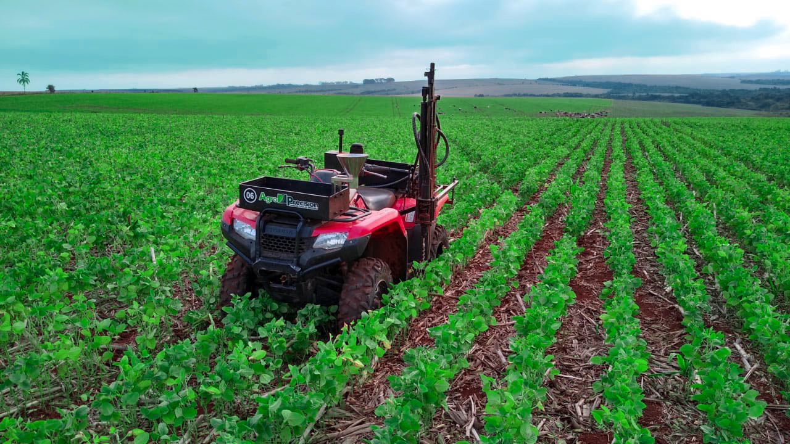
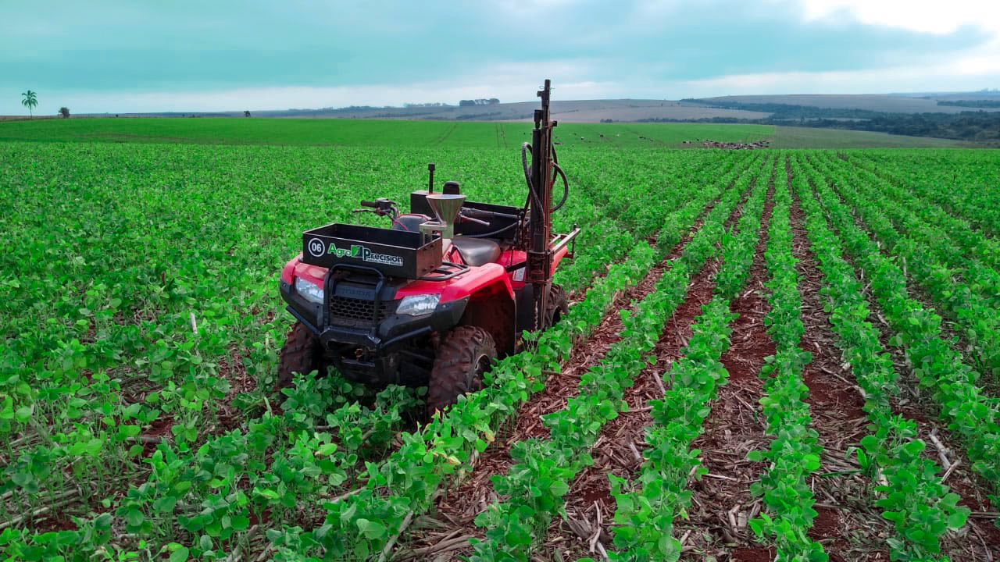

Agricultura é a prática de cultivar plantas e criar gado. Foi o principal desenvolvimento na ascensão da civilização humana sedentária,
por meio da qual o uso de espécies domesticadas criou excedentes de alimentos que permitiram às pessoas viver nas cidades.
A história da agricultura começou há milhares de anos. Depois de coletar grãos silvestres por pelo menos 105 mil anos, os primeiros agricultores começaram
a plantá-los há cerca de 11,5 mil anos. Animais como porcos, ovelhas e bois foram domesticados há mais de 10 mil anos.
As plantas foram cultivadas independentemente em pelo menos onze regiões do mundo. Desde o século XX, no entanto,
a agricultura industrial baseada na monocultura em grande escala passou a dominar a produção agrícola, embora cerca de 2 bilhões de pessoas ainda
dependiam da agricultura de subsistência.
Os principais produtos agrícolas podem ser agrupados em alimentos, fibras, combustíveis e matérias-primas (como a borracha). As classes de alimentos incluem cereais (grãos), vegetais, frutas, óleos, carnes, leite, ovos e fungos. Mais de um terço dos trabalhadores do mundo estão empregados na agricultura, perdendo apenas para o setor de serviços, embora nas últimas décadas a tendência global de diminuição do número de trabalhadores agrícolas continue, especialmente nos países em desenvolvimento onde a pequena propriedade está sendo superada pela agricultura industrial e pela mecanização, o que traz um enorme aumento no rendimento das culturas agrícolas.
A agronomia moderna, o melhoramento de plantas, os agroquímicos, como pesticidas e fertilizantes, e os desenvolvimentos tecnológicos aumentaram drasticamente o rendimento das culturas, mas causaram vastos danos ecológicos e ambientais.


 
